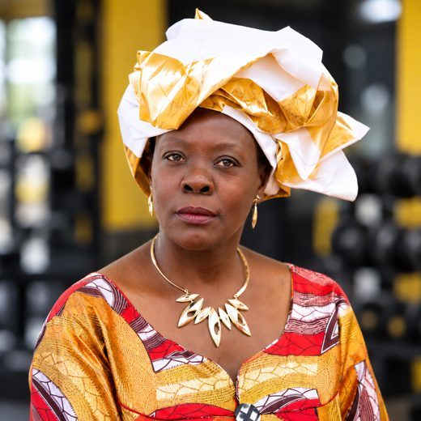

GOJIAS Collections
A marketplace to buy and sell tailor-made women's and girls' outfits, specialising in kitenge and Ankara fabric. Each piece is made to the customer's specifications. I plan to run it as my own business.
Software developer in training. I build with Go and JavaScript, and I sew the clothes my apps are for.

I'm a student at Zone01 Kisumu, a peer-to-peer, project-based coding bootcamp. I started with no technical background, and I now build web apps in Go and JavaScript.
I'm also a dressmaker. That is why my personal project is a real business tool: an app where customers can order outfits made to their measurements.
A marketplace to buy and sell tailor-made women's and girls' outfits, specialising in kitenge and Ankara fabric. Each piece is made to the customer's specifications. I plan to run it as my own business.
A Pomodoro study timer with a Go backend and live updates over WebSockets. The browser shows an animated ring that changes colour between focus and break.
A website I built for selling gym equipment and gym attire. View the code.
A team platform for community polls and group decisions. I was the project manager, keeping the team on track and the work divided fairly.
A Facebook-style social network with a Go backend and JavaScript frontend. I built the Groups feature.
Code for all of these is on my GitHub.
Before code, I had cloth. I design and sew outfits from kitenge and Ankara fabric, cut to each customer's measurements. Fitting garments taught me to work from a clear brief, check details twice, and finish what I start. I use the same habits when I write code.
What changed, and what stayed the same, when I started learning to code.
What I learned building a live study timer.
Lessons from leading CivicVote.
Software developer in training with hands-on Go and JavaScript experience from team and personal projects. Also an established dressmaker building a tool for her own business.
Zone01 Kisumu: software development bootcamp (peer-to-peer, project-based)
Go, JavaScript, HTML/CSS, WebSockets, Git and GitHub, project management
Dressmaker: designing and sewing custom women's and girls' outfits for customers